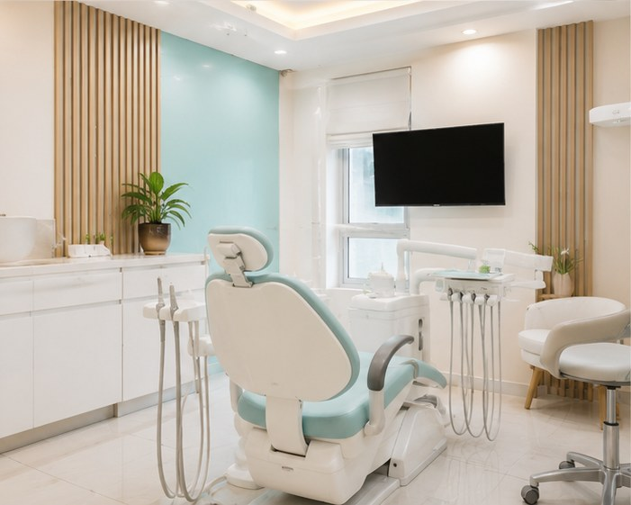

Clear communication
Good dental care should include understandable explanations of findings, options, expected outcomes and follow-up.
PATIENT EXPERIENCE
Choosing a dentist is about more than a treatment list. Explore Amayra Polyclinic & Dental Hub, understand our approach to patient care, and use independent patient reviews to make an informed decision.

WHAT MATTERS
Reviews are most useful when considered alongside clinical information, communication and the overall patient journey.
Good dental care should include understandable explanations of findings, options, expected outcomes and follow-up.
Treatment should be based on the patient's examination, dental history and clinical needs rather than a one-size-fits-all plan.
A calm, respectful environment can make dental visits easier, particularly for children and patients who feel anxious about treatment.
Before proceeding, patients should understand the proposed treatment, likely stages and the factors that may affect the final cost.
VERIFY FOR YOURSELF
For the most current feedback, use the clinic's Google listing. Reviews and ratings can change over time, so we recommend checking the live listing rather than relying on a static number on a website.
When reading reviews, look for comments relevant to your own needs—communication, treatment experience, appointment process and follow-up.
View Google Reviews →POPULAR DENTAL CARE
Learn about common treatment options and cost considerations before discussing your individual case.
NEAR AMANORA & MAGARPATTA
Book a consultation at Amayra Polyclinic & Dental Hub, Pune 411028.